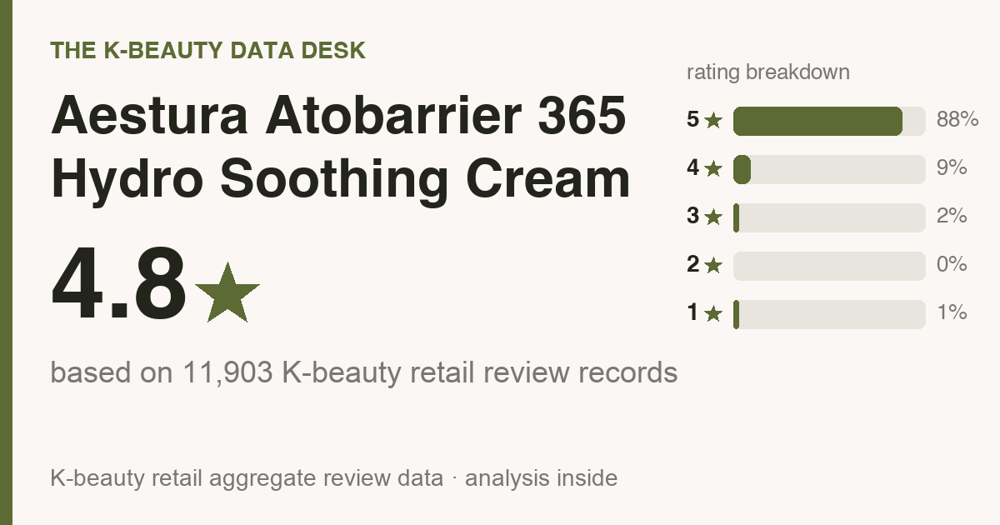
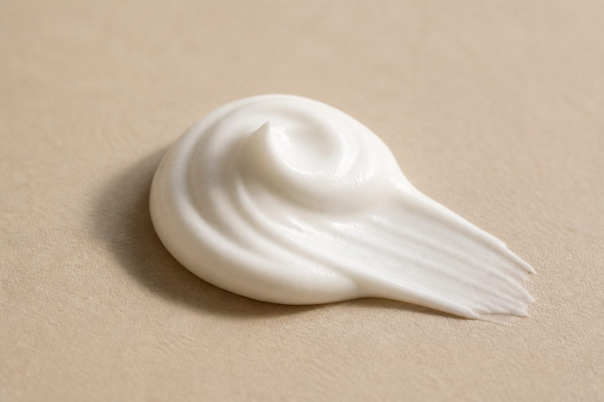
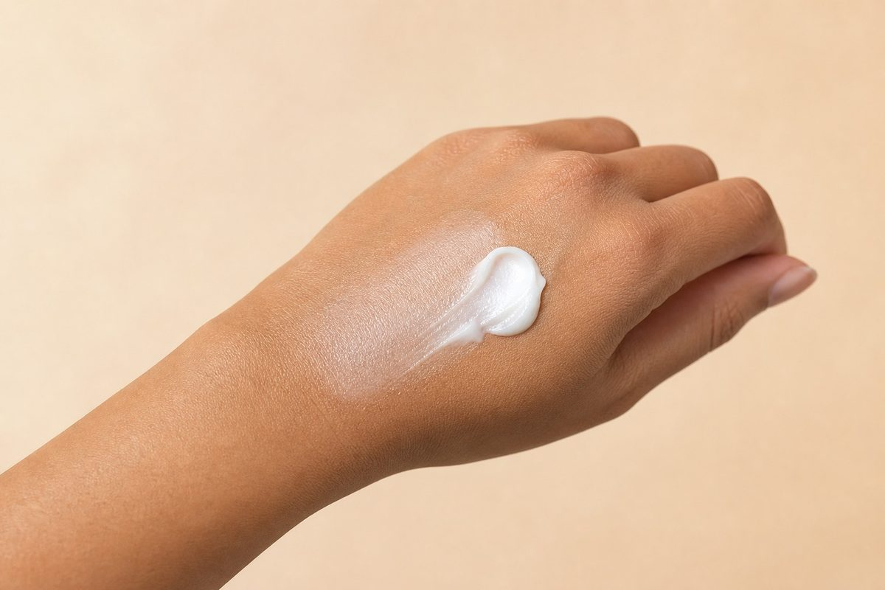

Updated July 2026. The numbers below come from 11,903 real Olive Young reviews, 500 of which I sat down and read line by line. Every one was written by an actual buyer. None of them were written, purchased, or translated by me.
One disclosure up front: the store links at the bottom pay me a small cut if you buy through them. Your price is the same either way, and nothing in that arrangement touches the data.

If you only read one box: 11,903 Olive Young reviews average 4.8★, with 88% of them at five stars. Buyers single it out for hydration (49%) and soothing redness (49%). The crowd skews combination skin (who should skip it is further down).

Korean price is around ₩26,400 (≈ $19). US retail moves, so the buy links will show you today's number. Only 5% of reviewers said they bought it again. Read that carefully: most people enjoyed the jar they had and then wandered off. That's a curiosity purchase, not a pantry staple. If the budget line is what decides this, a plain hydrating cream covers the same ground cheaper.
Some context. Aestura Atobarrier 365 Hydro Soothing Cream sells hard on Olive Young, the retail chain that dominates Korean beauty the way Sephora dominates the US mall. Search it in English, though, and you get scraps. A TikTok with no detail, maybe. So I went through what the reviews say and pulled out the parts a friend would tell you before you hand over the money.
The average sits at 4.8 stars, and it isn't a small pack of superfans hauling it up. 88% of reviewers gave it the full five (nearly 9 in 10), and 97% landed at four or five.
Read enough of them and the same two words keep surfacing. People love hydration and soothing redness.
Sorted by what it's genuinely good at:
Star ratings are the headline; the buy-or-skip information hides in the body text. So I worked through the 500 most-helpful reviews and tallied what people kept circling back to. Quick note on the math: everything in this section comes from those 500, while the star ratings and skin-type splits above come from the full base.
Inside the 5-star pile, the phrases that repeat are hydration & dewiness, fast absorption / fresh finish, and no sticky or heavy feel.
For twitchy skin, this section matters more than any star average. Among reviewers who mentioned texture on the skin, 69% said it felt gentle with zero sting, and irritation complaints were essentially absent. That's roughly the best signal this kind of data can produce. It still isn't a promise about your face. Patch-test along your jaw for a couple of days before you commit.
The reviewer pool runs combination (65%), dry (19%), oily (15%), which means these reviews describe combination skin most accurately (it leans combination skin). If that's you, this crowd is your crowd. If it isn't, the product may still work fine for you. It just means fewer reviewers share your skin type, so discount what you read accordingly.
Genuinely worth it for you if:
Nothing works for everyone. If you came here shopping for one of the following, this is the category I'd redirect your money toward, with ballpark US prices so you know what you're walking into:
Those are research leads, not ranked picks. I don't put my name behind a product until I've read its reviews, so go check them yourself and match on results first, price second.
Reviews are my source, not a lab sheet, so I can't tell you whether this contains fragrance. It's unverified from where I sit. The check that settles it takes half a minute: pull up the buy page, Ctrl/Cmd-F the ingredient list for "fragrance / parfum" and "alcohol denat." If either shows up and your skin hates it, skip. Reviewers called this gentle, but reactive skin should be reading the label, not the star rating.
Layering order is where people go wrong, so, for this format:

Strong match. 65% of reviewers had combination skin, the biggest single group by a wide margin, so the odds are stacked your way.
Mostly yes. 69% of reviewers said it felt gentle with no sting. Patch-test anyway if you react easily, but the irritation rate really is low.
Reviewers describe it as fast-absorbing and fresh rather than greasy, so the glow reads as dewy hydration rather than heavy sheen. One gap worth naming: this is a Korean review base, so it cannot tell you how that finish behaves on deeper skin tones, and I'm not going to manufacture a verdict the data doesn't hold. Do this instead. Press a thin layer onto one cheek, then look at it in daylight and again in a flash selfie before you commit. Any dewy formula can read shiny under a flash on any tone, so seeing it on your own skin is the only honest answer available.
Probably not, no. Normal skin will enjoy it without needing it, and if your current cream is doing its job, this one won't rearrange your life. It's a genuinely good pick if you're starting from scratch or replacing something you resent, but “the one I have works” is a completely legitimate reason to walk away.
Repurchasing is the behavior that matters, not the buzz. 5% said they bought it again and 27% reviewed after a month or more, and reviewers most often rate it best for hydration (49%). The re-buy number is modest, so the honest read is that it does its one job and then doesn't make anyone panic about running out.
It's one of the better-reviewed options in its category, but repeat purchases are thin, so treat it as an experiment rather than a fixture. Worth it if its top reviewer-voted strengths line up with what your skin actually lacks, and if you aren't buying it for the trendy actives.
I read the reviews, not the ingredient list, so I can't confirm fragrance status. If you're fragrance-sensitive, patch-test on your jaw for 24–48h first.
I don't track other brands' prices, so I'm not going to invent a dupe for you. Line it up against other top-ranked picks in the same category and match on what reviewers say it does well, not on the sticker.
Amazon is the path of least resistance (it auto-routes to your local store), and Olive Young now runs its own US storefront at us.oliveyoung.com. YesStyle and Stylevana are decent value alternates. Outside the US, Olive Young Global ships to the UK, Canada, Australia, Singapore and more. Links below.
For combination skin that wants hydration and soothing redness, Aestura Atobarrier 365 Hydro Soothing Cream is an easy yes. Measured against what it's trying to do, the crowd is plainly satisfied. If that's your lane, and there's no cream you already love sitting on your shelf, I'd say yes without much hedging.
And this isn't infatuation talking. 27% of the reviews I read were written a month or more into use, so the affection doesn't evaporate after week one.
Not your match? Other reviews built the same way, numbers and skip-it steers included:
Disclosure: This article contains affiliate links. If you buy through them, I may earn a small commission at no extra cost to you.
If you're in the US:
Outside the US (UK, Canada, Australia, Singapore, NZ and more):
On prices: the only number I can vouch for is the dated Korea shelf price above (pulled 2026-07-10). Stores reprice constantly and bundles muddy comparisons, so always compare the per-item price at the link before you buy.
← All K-Beauty Data Desk reviews · Best-seller rankings · About & methodology
Published by The K-Beauty Data Desk · Data refreshed 2026-07-10. The reviews are 100% real Olive Young buyers. My job was reading them and making sense of them; I never wrote, bought, paid for, or translated a single review, and this product never touched my face. I received no free product and am not paid or approved by the brand. Check the source ratings yourself.
Data basis: aggregate statistics from Olive Young Korea, retrieved 2026-07-10. The ratings, review count, star distribution and satisfaction polls are all facts pulled in aggregate. The wording, decoding and recommendations are mine. I never copy or translate individual user reviews.